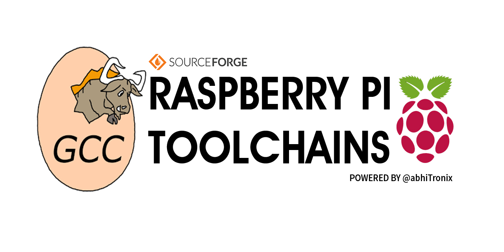

-
PiciT: A Powerful A.I Cropping Tool

- "PiciT" comprises a smart UI which is powered with Deep Learning & Vision AI Algorithms to dig into a terabyte of data pixels and come out with Aligned and Cropped Faces from the given image in no time. This app’s AI can Detect, Align, Crop and Compress single/multiple faces with the click of a button. In inclusion to this, it’s packed with built-in easy to use powerful Camera and an avant-garde Manual Image Cropping Tool to achieve desired dimensions and refine images.
- Try it
-
TAUGV-UGV

- TAUGV-CSR stands for “Tactically Assisted Unmanned Ground Vehicle with Crawling Surveillance Robot”, can provide remote surveillance and maneuver capabilities in a variable topography. The project consists of an Unmanned Ground Vehicle (UGV) and an attached Crawling Surveillance Robot (CSR)
- Robotics Overview
-
OpenCV+TBB for Raspberry Pi
- Fastest Optimized OpenCV for Rpi3 : Latest pre-compiled binary of Pre-released & Stable OpenCV (4.0.0) along with TBB (2018-Update 6) for the Raspberry Pi.
- TBB OpenCV Github
-
Raspberry Pi GCC Cross & Native Compilers
- This project contains the UpToDate set of Precompiled Raspberry pi GCC Cross & Native Compilers Binaries/Toolchains, which can used as native compilers for Raspberry Pi(Can be used along with old & slow 6.3.0 GCC), Or can used the Cross-Compiler in any Linux Machine(Tested on Latest Ubuntu/bionic x64) to compile programs for Raspberry Pi. All these compilers binaries are Raspberry Pi hardware optimized for enhanced overall performance.
- GCC SourceForge